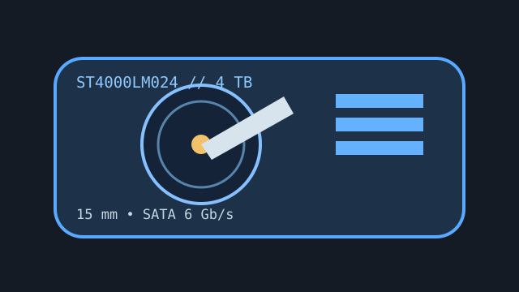

[ IDENTIFIED HDD // MODEL-SPECIFIC RECORD ]
Seagate BarraCuda ST4000LM024
4 TB, 2.5-inch SATA mobile-class HDD, 15 mm high. The height excludes it from many thin notebook and portable-drive enclosures.

IDENTIFICATION: Match ST4000LM024 exactly. Do not conflate this model with 3.5-inch BarraCuda products or other 4 TB suffixes.
Recorded specifications
| Exact model / capacity | ST4000LM024 / 4 TB nominal |
|---|---|
| Form factor / height | 2.5-inch / 15 mm |
| Interface | SATA 6 Gb/s |
| Rotation / cache | 5,400 RPM / 128 MB buffer |
| Sector / recording format | 512e; SMR. Verify the drive's logical-sector view and firmware before migration. |
Compatibility, noise, shock and reliability
- Use only an enclosure/controller with SATA support, 15 mm clearance, adequate ventilation and appropriate bridge capacity support. Many 9.5 mm mobile bays cannot accept this drive.
- Seagate's product manual publishes typical noise/sound power around 2.4 bel idle / 2.6 bel operating and shock limits of 300 G operating (2 ms) / 650 G non-operating (1 ms); protect against vibration despite lab ratings.
- SMR behavior matters for long sustained writes, RAID rebuilds and full-disk workloads. Check the host's cache/recovery behavior rather than assuming CMR equivalence.
- Published MTBF, load-cycle and non-recoverable read-error figures describe a population and test conditions, not this unit's remaining life. Keep independent verified backups.
Manufacturer documents
- Seagate BarraCuda 2.5-inch Product Manual, Rev. JManufacturer manual listing the ST4000LM024 model and mechanical/environmental data.
- Seagate BarraCuda 2.5-inch Product Manual, Rev. CEarlier manufacturer manual revision for cross-checking original model and safety information.
- Seagate BarraCuda 2.5-inch SupportOfficial documentation and product support page.